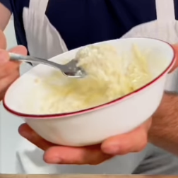

Salsa de Ajo y Parmesano
Ingredientes:
*3 porciones
- 180g de harina leudante
- Sal
- 180 g de yogur griego natural sin grasa
- 1 huevo (para el glaseado de huevo)
- Condimento Everything Bagel
Instrucciones:
- En bowl mezclar la harina con la sal y el yogur hasta que quede una masa espesa
- Colocalo en una superficie y divide la masa en 3
- Con ellas, enrolle 3 cuerdas gruesas, y da la forma de bagel o de dona
- Cubra cada una con el glaseado de huevo y más sal, así como el condimento de bagel
- Llevalas a la airfryer por 10 minutos hasta que estén bien doraditos